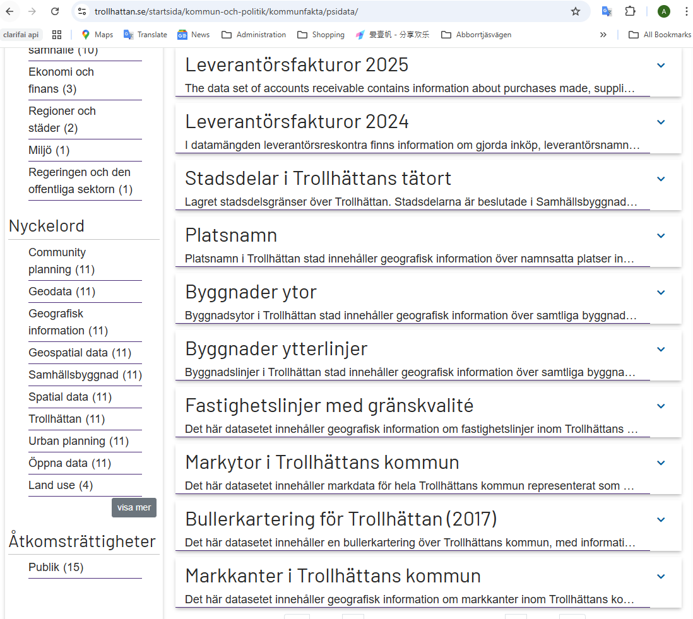

Alla data är öppna data från Trollhättans stad och kan hämtas här: Trollhättans stad öppna data .

I detta projekt används följande dataset:
- Byggnadsytor.geojson
- Stadsdelar.geojson
- Markytor.geojson
- Markkant.geojson
- Platsnamn.geojson
Alla data är öppna data från Trollhättans stad och kan hämtas här: Trollhättans stad öppna data .

I detta projekt används följande dataset: